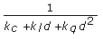

Short Name: Attenuation
Requires: Full Development System
Class: SceneLight Properties
To Use: Create a property.
Reads or writes the factors of attenuation applied to the light. Attenuation mimics how the intensity of light diminishes as you increase distance from the light.
Attenuation is determined using the following equation:

where:
kc = constant attenuation
kl = linear attenuation
kq = quadratic attenuation
d = the distance between the position of the light and the vertex
| Name | Description |
|---|---|
| Constant Attenuation | Indicates the constant factor of attenuation (kc) you apply to the light. The constant factor of attenuation does not change as distance from the light increases. |
| Linear Attenuation | Indicates the linear factor of attenuation (kl) you apply to the light. The linear factor of attenuation drops in a linear manner as distance from the light increases. |
| Quadratic Attenuation | Indicates the quadratic factor of attenuation (kq) you apply to the light. The quadratic factor of attenuation drops by the square of the distance from the light. |
The following table lists the characteristics of this property.
| Data type | |
| Permissions | Read/Write |
| Available in Run-Time Engine | Yes |
| Available in Real-Time Operating System | No |
| Settable when the VI is running | Yes |
| Loads the front panel into memory | No |
| Need to authenticate before use | No |
| Loads the block diagram into memory | No |
| Remote access allowed | Yes |